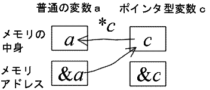
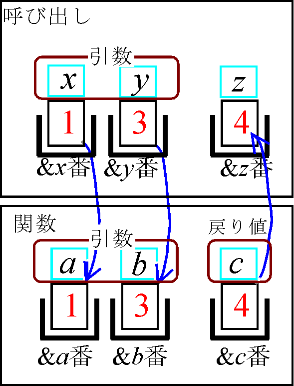
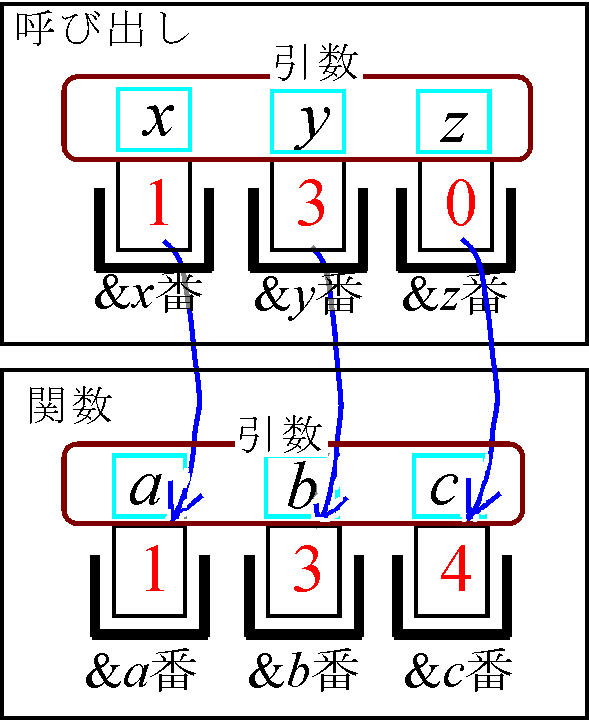
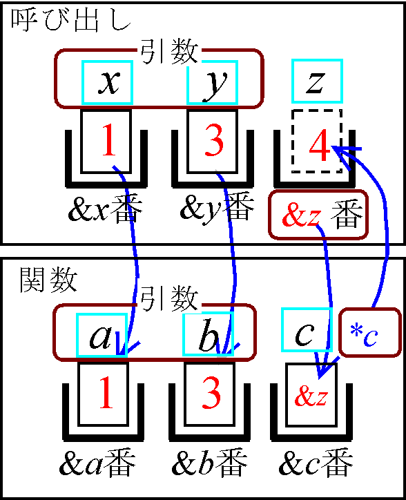
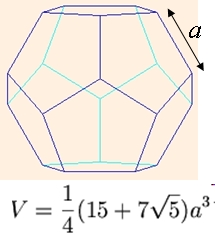

| プログラミングおよび演習 ＮＯ．10 |
| ポインタ |
例 10-1 #include<stdio.h>
int main(void)
{
int a,*c; /* a：普通の変数、c：ポインタ型の変数 の宣言*/
a=10; /* 変数aに10を代入 */
c=&a; /*変数aのアドレスをポインタ変数に代入*/
printf("a=%d &a=%d\n",a,&a);
printf("c=%d *c=%d &c=%d\n",c,*c,&c);
return(0);
}
|
|  |
| 演習問題１0-１ (Revised : 2013/10/28) 例１0-１のプログラムの動作を説明してください。また、このプログラムの、c=&aの後に、 *c=100; のような代入文を挿入した場合の結果を確かめてください。 変数aに対する代入演算が、ポインタ変数cを用いても実現できることを理解してください（a=100と*c=100のメモリ操作は、まったく同じ働きをする）。 |
| ポインタの応用（関数の引数） |
例10-2#include<stdio.h>
int main(void)
{
int x=1,y=3,z=0;
int add(int,int);
z=add(x,y); /*ｘとyの足し算結果をｚに入れる*/
printf("次は関数mainの出力\n");
printf("%d+%d=%d\n",x,y,z);
return(0);
}
int add(int a, int b)
{
int c;
c=a+b;
printf("次は関数addの出力\n");
printf("%d+%d=%d\n",a,b,c);
return(c);
} |
箱の名前： 変数名
箱の番号： メモリのアドレス
箱の中の紙： メモリに書き込まれているデータ
上記例題の関数呼び出しにおけるデータの受け渡しを、箱モデルを用いて示したのが以下の図です。
|  |
例10-3
#include<stdio.h>
int main(void)
{
int x=1,y=3,z=0;
void add(int,int,int);
add(x,y,z); /*ｘとyの足し算結果をｚに入れる*/
printf("次は関数mainの出力\n");
printf("%d+%d=%d\n",x,y,z);
return(0);
}
/* aとｂの値を足し算結果をcに入れるプログラム*/
void add(int a, int b, int c)
{
c=a+b;
printf("次は関数addの出力\n");
printf("%d+%d=%d\n",a,b,c);
} |
| 例10-３の関数呼び出し |
|  |
| ポインタ変数を引数に用いた関数呼び出し |
|  |
| 演習問題 10-2 (Revised : 2011/10/31) 前回の演習問題9-1では、return文の戻り値を使って、関数の結果を持ち帰りま した。上記の説明に従って、ポインタ型の引数を使って、値を持ち帰る格好に全ての関数を書き換えてみてください。 また、scanf文でscanf(“%e”,&a)のように 変数aの頭に&を付ける理由についてもレポートに示してください。 |
例 10-４（受け取りたいデータが２つある関数）#include<stdio.h>
#include<math.h>
int main(void)
{
void henkan(float, float,float *, float *);
float a,b,amp,phase;
printf("Input real part="); fflush(0); scanf("%e",&a);
printf("Input imag part="); fflush(0); scanf("%e",&b);
henkan(a,b,&,&phase);
printf("%e+j%e=|%e|∠%e\n",a,b, amp,phase);
return(0);
}
void henkan(float x, float y, float *r, float *theta)
{
*r=sqrt(x*x+y*y);
*theta=180.0*atan2(y,x)/3.141592;
} |
| 演習問題 10-3 (Revised : 2014/11/03) 税抜きで一個あたり120円のハンバーグをn個、一杯あたり100円のジュースをm杯、一袋あたり250円のポテトをk袋を買った時の、税抜き価格C、消費税(8%)Tax、及び税込み価格Sを求める関数を作成して下さい。 ただし、ハンバーグ、ジュース、ポテトの３点をセットで買った場合は、各々を単品で買った場合の合計金額(税抜き価格)から、40円×セット数の値引きがあることに注意してください(セット数は、n,m,kの最小値の数とする）。 また、消費税は値引き後の総計に対して計算し、一円未満は切り捨てて下さい。 ここでは、上で示した全ての変数（n, m, k, C, Tax, S）を引数とし、n, m, k をキーボードから入力すると、合計額の税抜き価格C、消費税(8%)Tax、及び税込み価格Sを画面に表示するプログラムとしてください。 また、メイン文と関数間の値の受け渡し方法に注目して、プログラムの動作を説明してください。 |
| プリプロセッサ |
| 演習問題 10-4（マクロ文の練習） (Revised : 2011/11/3) (1) 以下は、マクロ文COMPUTE(a,b) を用いた a*10+b の計算プログラムです。 プログラムを実行し、キーボードからa,bに適当な数値を入力した際の計算結果を確認してください。 次に、2*(a*10+b) を計算する目的で、 ans=2*COMPUTE(a,b); のように変更してみてください。この場合、期待通りの答えになりません。 その理由を考察し、正しい答えが出るように、マクロ文を訂正してください。 #include<stdio.h>
#define COMPUTE(a,b) a*10+b /* aの10倍にbを加算した結果を返す */
int main(void)
{
float a,b,ans;
printf("input a="); fflush(0); scanf("%e",&a);
printf("input b="); fflush(0); scanf("%e",&b);
ans=COMPUTE(a,b);
printf("\nCOMPUTE(%5.3f,%5.3f)=%f\n",a,b, ans);
return(0);
}
(2) 次のプログラムは、球の半径を指定して、球の体積を求めるためのプログラムです。xxxの部分には球の半径を指定します。xxxを適当な数値に書きかえた上で、プログラムを実行してみてください。xxxのところを、数値でなく、例えば 3+2 のような、足し算を含んだ式にすると、正しい答えがでてきません。 その理由を考察し、正しい答えが出るように、マクロ文を訂正してください。 #include<stdio.h>
#define PI 3.14159
#define VOLUME(r) 4.0/3.0*PI*r*r*r /*半径ｒの球の体積 */
int main(void)
{
printf("\n半径%fの球の体積＝%f\n",xxx,VOLUME(xxx));
return(0);
}
(3) 正十二面体の体積Vを指定して、一辺の長さaを求めるマクロを作成して下さい。
なお、Vとaの関係は以下の図の下に示しました。  (4)関数を使っても同じプログラムが作れます。マクロと関数は、どんな違いがありますか？ 各々のメリット、デメリットについて考察してレポートに書いてください。 |